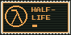
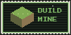
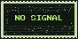
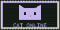
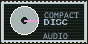
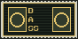
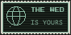
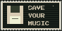
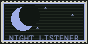

AFTERGLOW / PERSONAL SOUND ARCHIVEest. 2026
♪ welcome, stranger. stay for a song.
Welcome to afterglow ~ ♪ ~
Привет! Здесь живут медленные треки, длинное эхо и музыка для позднего вечера. Загружай свой файл и делай звук своим.
Загрузи трек или попробуй демо. Эффекты меняют звук прямо во время воспроизведения.
Music room ( o˘◡˘o )
AFTERGLOW / AG—01 STEREOPHONIC
пока тихоЧто будем слушать?
mp3 / wav / музыка из твоих папок
STEREO
здесь появится твоя музыка
0:000:00
♫ Эффекты меняются во время прослушивания.
Настроения
12 пресетов
БиблиотекаТвоя полка 0
Треки и готовые ремиксы появятся здесь.
Библиотека сохраняется в этом браузере.
little things i like 88 × 44 / коллекция открыток








